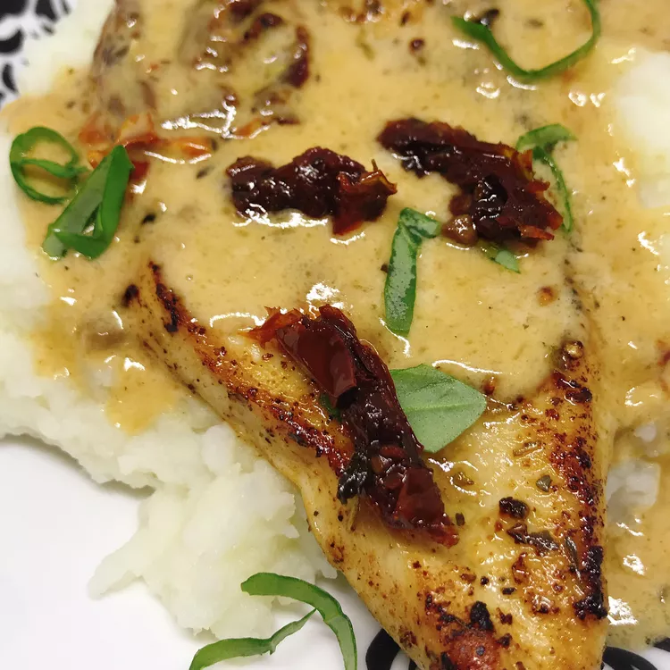

Chicken with Creamy Sun-dried Tomato Sauce

Description
An easy to cook, easy to clean one skillet chicken dinner!
Ingredients
- 4 lb. boneless, skinless, chicken breast
- salt & pepper to taste
- 10 tablespoons butter, divided
- 6 cloves garlic, minced
- 2 tablespoons Italian seasoning
- 1/2 teaspooon red pepper flakes
- 1 cup dry white wine
- 2 cups chicken broth
- 1 1/2 cups heaby whippingcream
- 1 cup oil-packed sun-dried tomatoes, thinly sliced
- 1 cup thinly sliced fresh basil
Steps
- pound the chicken breasts to an even thickness. Season Lightly with salt and pepper
- melt 4 tablespoons butter in a large nonstick skillet and cook 1/2 of the chicken breasts until they are no longer pink
in thecenter and the juices run clear; 5-10 min. Repeat with the remaining half of the chicken
- Melt the remaining 2 tablespoons butter in the same skillet and add garlic, Italian seasoning, and red pepper flakes. Cook, stirring contantly, for 1 min.
Pour in the wine and bring to a boil. Reduce heat and simmer for 2 min. Pour in chicken broth, return to a boil, reduce heat, and simmer for 5 min.
Stir in cream and sun-dried tomatoes. Simmer for 5 min.
- Stir in basil and return chicken to the skillet. Cook until chicken is heated and the sauce has thickened, about 5 min